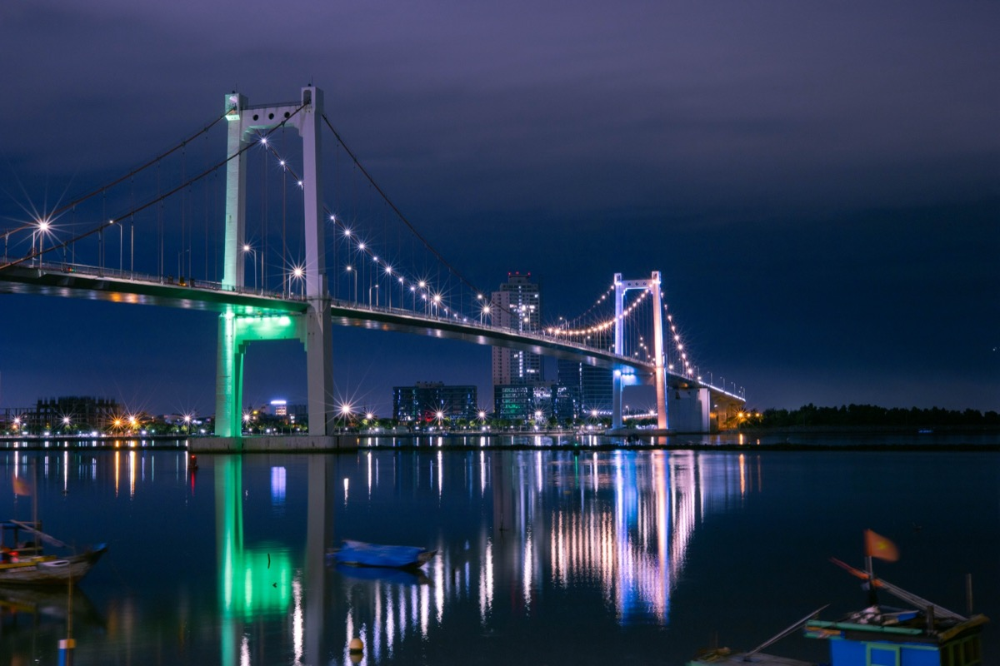
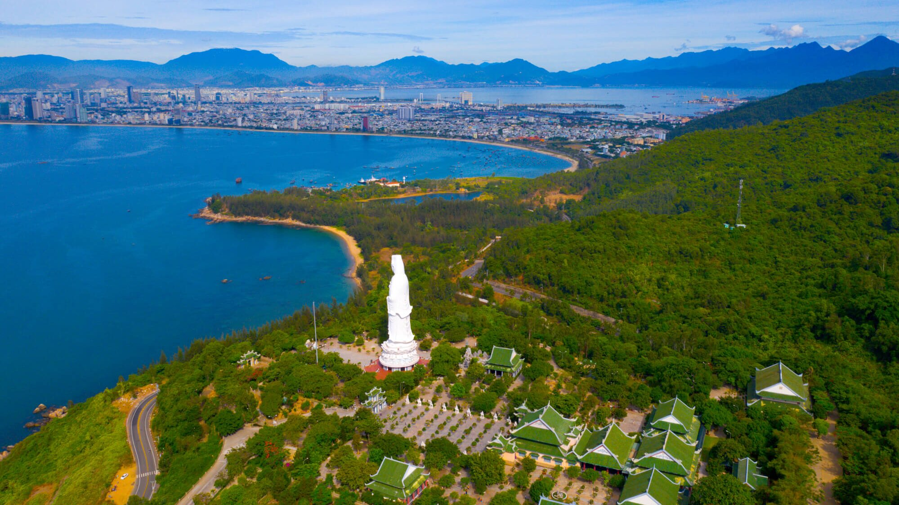
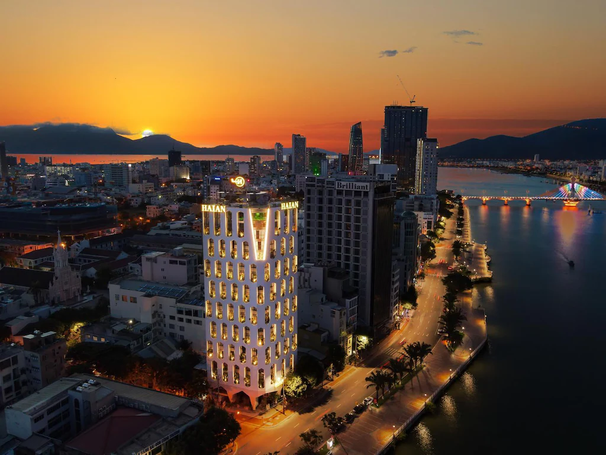

Every expat in Da Nang has done this with visiting friends at least once, and it never gets old. Dragon Bridge, Cầu Rồng, is the kind of thing that sounds cheesy on paper ("it's a giant dragon that breathes fire") and then you actually stand there watching it and it genuinely delivers.
Most guides get this wrong: the fire show at 9 PM is not really the point. It's the payoff at the end of a much longer evening.
The actual experience starts hours earlier, and if you show up at 8:55 and leave at 9:15, you've missed the whole thing.
What follows is less of a tourist guide and more of what I'd tell you over coffee before you went. Show times and logistics are in here too, but the goal is to get you doing this the right way.
The basics: Fire show runs Friday, Saturday, and Sunday at 9:00 PM, lasts about 15 minutes, and is completely free. But plan to arrive around 6 PM, the evening building up to it is the real attraction.
Show Schedule, The Simple Version
Friday, Saturday, Sunday at 9 PM. That's it.
No tickets, no reserved spots, no gate, the whole riverfront is fair game. The bridge is lit up with LED displays every night, but the fire only happens on weekends.
| Day | Show Time | Duration | Notes |
|---|---|---|---|
| Friday | 9:00 PM | ~15 minutes | Regular weekly show |
| Saturday | 9:00 PM | ~15 minutes | Regular weekly show |
| Sunday | 9:00 PM | ~15 minutes | Regular weekly show |
| Public Holidays | 9:00 PM | ~15 minutes | Additional shows sometimes added; check local announcements |
| Monday–Thursday | , | No show | Bridge lit with LED displays only |
What Actually Happens at 9 PM
There are two acts. First comes the fire, the dragon's mouth opens up and breathes sustained jets of flame.
It's loud, it's bright, and the heat is real if you're standing close. Then comes the water: high-pressure jets shoot out from beneath the head and along the lower bridge section.
This is where people get surprised. The fire gets all the attention in photos, but the water is what gets you wet, and it absolutely will if you're in the wrong spot on the bridge.
More on that below.
Rain and Cancellations
Light rain? Show goes on.
A proper storm rolling in off the sea? That might cancel it.
There's no official announcement system, just head to the riverfront around 8:30 PM and see if the crowd is building. That's your best signal.
Holidays
On Tết, National Day (September 2), and Liberation Day (April 30), they sometimes add extra shows or extend the performance. Crowds are dramatically larger.
If you're visiting during a major holiday, add an extra hour to your arrival time and keep your expectations flexible.

The Thuan Phuoc Bridge frames the Han River's western approach, worth a walk across after dark.
The Right Way to Do Dragon Bridge Night
The real story of Dragon Bridge night is that the experience starts way before 9 PM, and it builds. Get there early and you'll watch the whole area transform around you.
As showtime approaches, vendors appear out of nowhere and line the sidewalks with hundreds of plastic chairs. Streets that were quiet at 6 PM are heaving by 8:30.
The market comes alive. The whole waterfront turns into one big, loose block party with a dragon at the center.
That's the event. The fire show is just the finale.
The Pro Move: Arrive Around 6 PM for Dinner
The strip along the west bank, what I think of as "Dragon Bridge row", has a solid lineup of restaurants right on the water. My personal go-to is Fat Fish, a nostalgic pick that holds up.
Get dinner, take your time, watch the crowds start to gather from your table. After dinner, grab a coffee or a cocktail nearby, Phuc Long and Highlands Coffee both have locations in the area and offer blessed air conditioning if you've got kids who need a cool-down before the madness.
Then head over to the market and street area around 7:30 PM. You'll have a good hour to browse, eat street food, and find your spot before the show.
Your Two Main Options for the Show Itself
Once 9 PM is approaching, you've got a genuine choice to make, and both options are good, they're just very different experiences.
Option 1: Get on the bridge. Stairs at both ends of the bridge take you up to the pedestrian walkway. Walking out and standing beneath the dragon's head as it fires is genuinely thrilling.
This is the dramatic option, the photo option, the "I can't believe I'm this close" option. The trade-off: it fills up fast, so if you want a prime spot under the head, get up there 45–60 minutes early.
And there is one more thing you need to know, the water spray will drench you. The fire gets all the hype, but what follows it is a high-pressure water jet that soaks a large percentage of people standing near the dragon's mouth.
That is not an exaggeration. If you're okay with getting completely wet (and honestly it's kind of amazing), go for it.
If you're not, stay toward the tail end of the walkway or choose option 2.
Option 2: Stay street-level. Grab a coconut water, find a seat by the river, let the vendors do their thing around you, and watch the show from the promenade. The dragon is big enough that there's no bad angle from street level, you can spread out across several hundred metres of riverfront and still get a great view.
This is the more relaxed, local-feeling way to do it. You stay dry, you can grab food during the buildup, and honestly the reflection of the fire on the Han River is one of the best parts anyway.
Wet warning: If you go up on the bridge and stand near the dragon's head, you will almost certainly get wet from the water jets. Bring a small towel or wear something you don't mind soaking.
The fire gets the attention, the water is what surprises people.
From Riverside Cafés and Rooftop Bars
Several venues along the west bank have river-facing terraces with clear sightlines to the bridge. This is the comfortable, drink-in-hand option.
Prices go up on show nights and tables go fast, if you have your heart set on a specific rooftop spot, book ahead.
From the River (Night Cruise)
Watching from the water is a completely different angle and gives you the reflection view, which is genuinely impressive. If you want to do a Han River cruise, see our companion guide: Han River Night Cruises, Dragon Bridge Show Guide 2026.
The Market and What's Around the Area
Directly across on the Son Tra (east) side, a night market runs most evenings and absolutely explodes on show nights. I wouldn't over-sell it as a destination on its own, it's not a large or sophisticated market.
But as part of the whole Dragon Bridge evening experience, it's exactly right. Give it 30–45 minutes before the show and you'll be glad you did.
| Category | Details |
|---|---|
| What's sold | Souvenirs, lanterns, magnets, clothing, fresh coconuts, grilled corn, banh mi, grilled seafood (squid, prawns), desserts, local snacks |
| Prices | Souvenirs: negotiate, initial price is often 2–3× what vendors accept. Food and drink: mostly fixed; 15,000–50,000 VND (60¢–$2 USD) per item |
| Best time to visit | 30–45 minutes before the show (less crowded, easier to browse) |
| Crowd level | Moderate on regular weekends; heavy on holidays |
| Payment | Cash preferred; bring small denominations in VND |
| Safety | Standard precautions: keep bags closed, be aware of pickpocketing in show-night crowds near the bridge |
On bargaining: Souvenir vendors will quote you a tourist price. Counter at 50–60% and you'll be in the right range.
That's normal, not rude. Food stalls have fixed prices and aren't expecting negotiation, don't go there.
What Else Is in the Area
The whole stretch around the bridge is well-stocked for an evening out. You've got plenty of coffee shops (Phuc Long and Highlands are both represented and have AC, useful with kids), bánh mì spots, seafood-style street food where you sit down on small plastic stools, ice cream stands, souvenir shops, and a few mini-marts scattered in.
Those mini-marts are worth noting: if you want to grab a few cold beers and walk over to the riverside promenade to watch the show, that is completely legal in Vietnam and very much something locals do. No one is going to bother you.
Tran Hung Dao Promenade
The riverside walkway along Tran Hung Dao Street is Da Nang's main evening social space on any given night. On show nights it's something else entirely, street food carts multiply, families arrive with picnic gear, and the whole thing smells like grilled corn and the river.
It's a good scene even if the show got cancelled.
"Dragon Bridge is the defining symbol of modern Da Nang, a 666-metre dragon that breathes fire and water every Saturday and Sunday at 9pm. The show is free, it's visible from both banks, and the tourist-crowd pressure it creates on Han River is part of the experience."
Love Lock Bridge
A short walk south, this pedestrian bridge is covered in thousands of padlocks left by couples. Nice at dusk, genuinely romantic if that's your thing, completely free to access.
Hotels Near Dragon Bridge
The dragon's head, and the show, and the market, is on the east (Son Tra) bank. That's the side you want to be on if you plan to stumble back to your room after.
Under 5 minutes on foot means you can skip the Grab scramble at 9:15 PM when everyone else is trying to get one simultaneously.

The most consistently recommended hotel on the Son Tra side for Dragon Bridge proximity. Located on the east bank roughly 350m from the bridge head, a 3–4 minute walk to the fire show and the night market entrance on Vo Van Kiet Street.
The hotel has a rooftop pool with views across to the bridge, and multiple guests specifically mention watching the fire show from it. Includes breakfast, free parking, and 50 rooms with a clean, modern fit-out.
Bridge view: Good from rooftop pool. Night market: Essentially next door, 2 minute walk.
The streets immediately east of Dragon Bridge, particularly around Vo Van Kiet Street and the lanes running off it toward the night market, have a growing number of small guesthouses and budget hotels. Most were built or renovated in the last few years to serve the show-night visitor trade.
Quality varies significantly; check recent reviews. Expect 250,000–450,000 VND per night for a private room with air conditioning.
The walk to the dragon's head and the night market entrance is 2–5 minutes from most.

What to Bring
- Cash in VND: Street vendors don't do cards. 200,000–300,000 VND covers drinks, snacks, and a souvenir or two.
- Light clothing: Da Nang evenings are warm year-round. Even "winter" nights rarely drop below 20°C.
- A small towel if you're going on the bridge: Not optional. The water spray is real and will find you if you're near the dragon's head.
- Your phone or camera: The fire sequence is bright enough for phones to handle well. Video tends to be more satisfying than stills for the fire itself.
- Sunscreen if you're arriving early: In summer, the late-afternoon sun on the bridge before showtime is brutal. Come prepared or stay in the shade until it cools down.